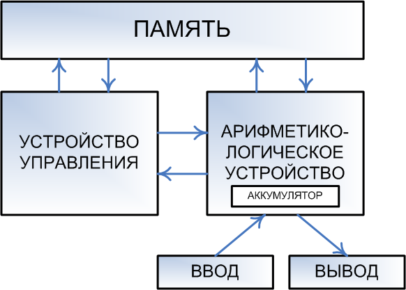

Этот материал представляет собой обновлённую, существенно переработанную и дополненную версию статьи 2006 года, которая называлась «Современные десктопные процессоры архитектуры x86: общие принципы работы (x86 CPU FAQ 1.0)». Правда, чтобы не вводить потенциальных читателей в заблуждение словом «FAQ», мы решили назвать новый материал более правильным, как нам кажется, термином — «дайджест». Действительно, ведь большая его часть — это не ответы на конкретные вопросы, а разъяснения и краткие выжимки из чего угодно — от технической документации до истории развития микропроцессорной отрасли. Для кого предназначен данный материал? Нам видятся две группы потенциальных читателей.
Первая — это те, кто вдруг обнаружил, что ему действительно интересно узнать, как работает современный x86-процессор. Для них мы попытались сосредоточить в рамках статьи максимальное количество полезных сведений, которые позволяют получить более-менее полное представление об этом процессе, даже не имея до этого (почти) никаких специальных знаний: здесь объясняется значение основных терминов, устройство современных CPU, принципы взаимодействия различных их составляющих между собой, а также процессора с компьютерной системой в целом.
Вторая группа — это те, кто не найдёт в статье почти ничего нового для себя — но им попросту лень писать нечто похожее самостоятельно, чтобы сосредоточить разбросанные по мозгу знания в одном месте, «причесать» их, систематизировать, упорядочить, осовременить, и так далее. Мы сами отлично понимаем, как бывает лениво писать конспекты :) (а особенно — хорошие конспекты), поэтому если наш дайджест вас устраивает — мы с радостью дарим вам возможность им пользоваться.
Ну и традиционное предупреждение: если иное не указано явно, то слово «процессор» в данном материале обозначает «x86(-64) процессор, предназначенный для установки в десктопы или (намного реже) мобильные компьютеры». Серверные процессоры, специализированные процессоры с архитектурой x86, всевозможные embedded-варианты — всё это в рамках статьи не рассматривается.
Любой компьютер как универсальный инструмент для работы с информацией устроен очень просто. Все его части можно разделить на 3 вида: устройства обработки, хранения и обмена (ввода-вывода), причём последние могут осуществлять обмен данными как между компьютером и человеком, так и между другими компьютерами. С информационной точки зрения больше ничего там нет, хотя учитывая, что компьютер — устройство электрическое, ему нужен источник питания, кабели и т.п., но это общая часть всей электроники. При этом каждый элемент сам делится на компоненты вышеперечисленных трёх видов. Например, процессор относится к устройствам обработки, но внутри себя имеет блоки собственно вычислений, локальной памяти и обмена. Большая часть пока ещё непонятных терминов именует конкретные детали процессора или методы их взаимодействий.
Если не пытаться изложить здесь «кратенько» курс информатики для средней школы, то единственное что хотелось бы напомнить — это то, что процессор (за редкими исключениями) исполняет не программы, написанные на каком-нибудь языке программирования (один из которых, вы, возможно, даже знаете), а так называемый машинный код. Т.е. командами для него являются последовательности байтов, находящихся в памяти компьютера, не имеющие ничего общего не только с каким-то человеческим языком, но и с языком программирования высокого уровня. Каждая команда занимает до нескольких байт, в среднем — 3-5. Там же, в основной памяти (ОЗУ, RAM) находятся и данные. Они могут находиться в отдельной области, а могут и быть перемешаны с кодом. Различие между кодом и данными состоит в том, что данные — это то, над чем процессор производит операции. А код — это команды, которые ему сообщают, какую именно операцию он должен произвести. Одновременно в памяти располагаются множество программ, необходимых им данных и некоторое свободное место.

Чтобы исполнить команду, процессор должен прочитать её из памяти. Чтобы произвести операцию над данными (а этого требует почти каждая команда), процессор должен прочитать их из памяти, и, возможно, после произведения над ними определённого действия, записать их обратно в память в обновлённом (изменённом) виде. Команды и данные идентифицируются их адресом, который представляет собой порядковый номер байта в памяти, с которого эти данные начинаются (если они занимают несколько байт).
Возможно, кого-то удивит, что достаточно большой раздел в «Дайджесте», посвящённом x86 CPU, выделен под объяснение особенностей функционирования памяти в современных системах, основанных на данном типе процессоров. Однако факты — упрямая вещь: сами x86-процессоры ныне содержат так много блоков, отвечающих именно за оптимизацию их работы с ОЗУ, что игнорировать эту тесную связь было бы совершенно нелепо. Можно сказать даже так: уж, коль решения, связанные с оптимизацией работы с памятью, стали неотъемлемой частью самих процессоров — то и саму память можно рассматривать в качестве некоего «придатка», функционирование которого оказывает непосредственное влияние на скорость работы CPU. Без понимания особенностей взаимодействия процессора с памятью, невозможно понять, за счёт чего тот или иной процессор (та или иная система) исполняет программы медленнее или быстрее.
Итак, ранее выше мы уже говорили о том, что как команды, так и данные, попадают в процессор из оперативной памяти. На самом деле всё немного сложнее. Ещё недавно в большинстве x86-систем (т.е. компьютеров на базе x86-процессоров), процессор к памяти обращаться сам не мог, т.к. не имел в своём составе соответствующих узлов. Некоторые не самые новые, но ещё популярные линейки процессоров (Intel Core 2, Celeron и Pentium всех видов) используют такую классическую организацию и сейчас. В этой схеме процессор обращается к «промежуточному» специализированному устройству, называемому контроллером памяти, а уже тот, в свою очередь — к микросхемам ОЗУ, размещенным на модулях памяти. Модули вы наверняка видели — это такие длинные узкие текстолитовые «планочки» (фактически — небольшие платы) с несколькими микросхемами на них, вставляемые в специальные разъёмы на системной плате. Роль контроллера ОЗУ, таким образом, проста: он служит своего рода «мостом» между памятью и использующими её устройствами (а это не только процессор, но об этом — чуть позже).
В традиционной схеме, контроллер памяти входит в состав чипсета — набора микросхем, являющегося основой системной платы. От быстродействия контроллера во многом зависит скорость обмена данными между процессором и памятью, это один из важнейших компонентов, влияющих на общую производительность компьютера. По «новой» схеме (к ней относятся процессоры Intel Core с буквой «i», и все ныне выпускаемые CPU AMD), контроллер памяти входит в состав самого процессора — теперь никаких посредников между памятью и процессором нет, так что общаться им оказывается проще и быстрее. Однако многочисленным устройствам ввода-вывода жизнь несколько усложнилась — им путь до памяти стал на один шаг длиннее, т.к. чипсет никуда не исчез (а лишь лишился контроллера памяти), и теперь обращаться к памяти требуется через процессор, отвлекая его от выполнения программ. Тем не менее, новая схема является прогрессивной, потому что процессору важнее всего получить доступ к памяти как можно быстрее, даже ценой некоторого усложнения доступа для других устройств — именно он является главным потребителем и производителем той информации, которая записана в памяти.
Любой процессор обязательно оснащён как минимум одной процессорной шиной, которую в среде x86 CPU иногда по старинке называют FSB (Front Side Bus), хотя современные процессоры имеют для неё разные названия (QPI для Intel и HyperTransport для AMD). В многопроцессорных платах таких шин несколько, и связаны они с другими процессорами и чипсетом. В домашних компьютерах, где процессор, как правило, один, шина у него единственная (не считая шины памяти, если в процессор встроен её контроллер) и связывает его с чипсетом, а через него — со всеми остальными устройствами.
На сегодняшний день вся память, используемая в современных десктопных x86-системах, имеет шину шириной 64 бита. Это означает, что за один такт по данной шине одновременно может быть передано количество информации, кратное 8 байтам (8 байт для SDR-шин, 16 байт для DDR-шин). Особняком стоит только память типа RDRAM, применявшаяся в системах на базе процессоров Intel Pentium 4 на заре становления архитектуры NetBurst, но сейчас это направление признано тупиковым для x86-ПК (к слову — руку к этому приложила всё та же компания Intel, которая в своё время активно пропагандировала данный тип памяти). Некоторую неразбериху вносят лишь многоканальные контроллеры, обеспечивающие одновременную работу с несколькими отдельными друг от друга 64-битными шинами. Применительно к 2-канальным котроллерам некоторые производители заявляют о «128-битности». Однако арифметика на уровне 1-го класса в данном случае работает с оговоркой: 2x64 равно 128 только когда все каналы работают одновременно. Т.е. N-канальный контроллер памяти теоретически может увеличить скорость работы с данными в N раз, но при этом ширина каждой шины памяти во всех современных контроллерах, применяемых в x86-системах по-прежнему равна 64 битам. На данный момент времени, одноканальный контроллер памяти можно смело назвать анахронизмом: все современные x86-системы оснащены как минимум 2-канальными контроллерами памяти, а некоторые — даже 3-канальными.
Скорость чтения и записи информации в память теоретически ограничивается исключительно пропускной способностью самой памяти. Так, например, двухканальный контроллер памяти стандарта DDR2-800 теоретически способен обеспечить скорость чтения и записи информации, равную 8 байт (ширина шины) * 2 (количество каналов) * 2 (протокол DDR, обеспечивающий передачу 2 пакетов данных за 1 такт) * 400'000'000 (фактическая частота работы шины памяти равная 400 МГц, т.е. 400 млн. тактов в секунду). Упомянем, что полученное произведение измеряется не в МБ/с (ГБ/с), а млн. (млрд.) байт/с, что несколько меньше честных двоичных «мега-» и «гига-». Даже с учётом этого, значения, получаемые в результате практических тестов, как правило, чуть ниже теоретических: сказывается «неидеальность» конструкции контроллера памяти, плюс накладки (задержки), вызванные работой подсистемы кэширования самого процессора (см. ниже раздел про процессорный кэш). Однако основной «подвох» содержится даже не в накладках, а в том, что скорость «линейного» чтения или записи является вовсе не единственной характеристикой, влияющей на фактическую скорость работы процессора с ОЗУ. Необходимо кроме линейной скорости считывания или записи учитывать ещё и такую характеристику, как латентность.
Латентность (она же — задержка) является не менее важной характеристикой с точки зрения быстродействия подсистемы памяти, чем скорость «прокачки данных». Большая скорость обмена данными хороша тогда, когда их размер относительно велик, но если нам требуется «понемногу с разных адресов» — то на первый план выходит именно латентность. Что это такое? В общем случае — время, которое требуется для того, чтобы начать считывать информацию с определённого адреса. И действительно: с момента, когда процессор посылает контроллеру памяти команду на считывание (запись), и до момента, когда эта операция осуществляется, проходит определённое время. Причём оно вовсе не равно времени, которое требуется на пересылку данных. Приняв команду на чтение или запись от процессора, контроллер памяти «указывает» ей, с каким адресом он желает работать. Доступ к любому произвольно взятому адресу не может быть осуществлён мгновенно. Возникает задержка: адрес указан, но память не готова предоставить к нему доступ, особенно если он указывает на слишком далёкое от предыдущей операции место (по разнице адресов). В общем случае, эту задержку и принято называть латентностью. У разных типов памяти она разная. Так, например, память типа DDR3 имеет в среднем большие задержки, чем DDR2 (при одинаковой частоте передачи данных). В результате, если данные в программе расположены «хаотично» и «небольшими кусками», либо метод считывания или записи совсем не последовательный, то скорость обмена становится намного менее важной, чем скорость доступа к «началу куска», т.к. задержки при переходе на очередной адрес влияют на быстродействие системы намного сильнее, чем скорость считывания или записи.
«Соревнование» между скоростью чтения (записи) и латентностью — одна из основных головных болей разработчиков современных систем: к сожалению, рост скорости чтения (записи) почти всегда приводит к увеличению латентности. Так, например, память типа DDR обладает в среднем лучшей (меньшей) латентностью, чем DDR2. В свою очередь, у DDR3 латентность ещё выше (то есть хуже), чем у DDR2. Правда, здесь следует хорошо понимать, каким образом следует правильно сравнивать латентность. Если вы интересовались данным вопросом, вам наверняка хорошо знакома строчка вида «4-4-4-12», обозначающая как раз величину задержек при выполнении некоторых операций. Задержки в данном случае указаны в тактах частоты, на которой работает память. В то же время, если нас интересует латентность как единица измерения скорости, то считать её нужно не в тактах, а в секундах. Именно на этом часто «прокалываются» не очень хорошо разбирающиеся в вопросе пользователи, не понимающие, почему латентность, к примеру, в 6 тактов, может быть меньше, чем латентность в 4 такта. А всё очень просто: например, если модуль памяти с латентностью в 6 тактов, работает на частоте 800 МГц, а модуль памяти с латентностью 4 — на частоте 400 МГц — то совершенно очевидно, что 6 тактов на частоте 800 МГц займут меньше времени, чем 4 на частоте 400.
Также следует понимать, что «общая» латентность подсистемы памяти зависит не только от неё самой, но и от контроллера памяти и места его расположения — все эти факторы тоже влияют на задержку. Именно поэтому компания AMD в процессе разработки архитектуры AMD64 решила «одним махом» решить проблему высокой латентности, интегрировав контроллер прямо в процессор — чтобы максимально «сократить дистанцию» между процессорным ядром и модулями ОЗУ. Затея удалась, но с подвохом: теперь система на базе процессора AMD может работать только с той памятью, на которую рассчитан контроллер процессора. Наверное, поэтому компания Intel долго не решалась на такой кардинальный шаг, предпочитая действовать традиционными методами: усовершенствуя контроллер памяти в чипсете и механизм предзагрузки в процессоре (про него см. ниже) — пока всё-таки не согласилась, что идея AMD выгодней.
В завершение заметим, что понятия «скорость чтения / записи» и «латентность», в общем случае, применимы к любому типу памяти — в том числе не только к классическому ОЗУ (SDR, Rambus, DDR, DDR2, DDR3, …), но и к кэшу (см. ниже).Наверняка вы часто встречались с термином «x86», или «Intel-совместимый процессор» (или «IBM PC compatible» — но это уже по отношению к компьютеру). Иногда также встречается термин «Pentium-совместимый» (почему именно Pentium — вы поймете сами чуть позже). Что скрывается за всеми этими названиями? На данный момент наиболее корректно с точки зрения авторов выглядит следующая простая формулировка: современный x86-процессор — это процессор, способный корректно исполнять машинный код архитектуры x86-64 (архитектура 32-битных процессоров Intel, дополненная 64-битными расширениями от AMD). В первом приближении современный x86 — это код, исполняемый процессором i80386 (известным в народе как «386-й»), окончательно же основной набор команд 32-битной архитектуры IA32 сформировался с выходом процессора Intel Pentium Pro (с очень незначительным дополнениями в следующих процессорах). Что означает «основной набор» и какие есть еще? Для начала ответим на первую часть. «Основной» в данном случае означает то, что с помощью исключительно этого набора команд может быть написана любая программа для процессора архитектуры x86.
Кроме того, у архитектуры IA32 существуют «официальные» расширения (дополнительные наборы команд) от разработчика самой архитектуры, компании Intel: MMX, многочисленные SSE (вплоть до 4.2) и AVX. Также существуют «неофициальные» (не от Intel) расширенные наборы команд: EMMX, 3DNow!, Extended 3DNow!, SSE4.a и XOP — их разработала компания AMD. Впрочем, «официальность» и «неофициальность» в данном случае понятие относительное — де-факто всё сводится к тому, что некоторые расширения набора команд Intel как разработчик изначального набора признаёт, а некоторые — нет, разработчики же программного обеспечения используют то, что им лучше всего подходит. В отношении расширенных наборов команд существует правило хорошего тона: прежде чем их использовать, программа должна проверить, поддерживает ли их процессор. Иногда отступления от этого правила встречаются (и могут приводить к неправильному функционированию программ), но объективно это является проблемой некорректно написанной программы, а не процессора.
Для чего предназначены дополнительные наборы команд? В первую очередь — для увеличения быстродействия при выполнении наиболее частых операций. Одна команда из дополнительного набора, как правило, выполняет действие, для которого понадобилась бы небольшая процедура, состоящая из команд основного набора, причём специальная команда выполняется процессором быстрее, чем заменяющая её последовательность. Однако в 99% случаев ничего такого, чего нельзя было бы сделать с помощью основных команд, команды из дополнительного набора также не делают. Таким образом, упомянутая выше программная проверка поддержки дополнительных наборов команд процессором должна выполнять очень простую функцию: если, например, процессор поддерживает SSE — значит, считать будем быстро и с помощью команд из набора SSE. Если нет — будем считать медленнее, с помощью команд из основного набора. Корректно написанная программа обязана действовать именно так. Впрочем, сейчас практически никто не проверяет у процессора наличие поддержки MMX, т.к. все CPU, вышедшие за последние 10 лет, этот набор поддерживают гарантированно. Для справки приведём табличку, на которой обобщена информация о поддержке различных расширенных наборов команд различными десктопными (предназначенными для настольных ПК) и некоторыми мобильными процессорами.
Примечания: PPro — означает наличие всех общих команд; Версия SSE — номер последней поддерживаемой версии, подразумевая и все предыдущие; Ряд SSE: SSE, SSE2, SSE3, SSSE3, SSE4.1, SSE4.2; Для процессоров AMD наличие SSE4.a означает поддержку только SSE, SSE2, SSE3 и SSE4.a; (M) — мобильная модель, даже если явно в имени не указано; (DC) — двухядерный процессор, указано в индексе модели.На данный момент всё популярное десктопное программное обеспечение (операционные системы Windows и Linux, офисные пакеты, компьютерные игры, и прочее) разрабатывается именно для x86-процессоров. Оно выполняется (за исключением «дурно воспитанных» программ) на любом x86-процессоре, независимо от того, кто его произвёл. Поэтому вместо ориентированных на разработчика изначальной архитектуры терминов «Intel-совместимый» или «Pentium-совместимый», стали употреблять нейтральное название: «x86-совместимый процессор», «процессор с архитектурой x86». В данном случае под «архитектурой» понимается архитектура системы команд (ISA, Instruction Set Architecture) — совместимость с определённым набором команд с точки зрения программиста. Есть и другая трактовка того же термина.
В 2003 г. сначала AMD, а через год — и Intel, анонсировали практически идентичные технологии (впрочем, AMD предпочитает называть это архитектурой), благодаря которым классические x86 (IA32) CPU получили статус 64-битных. В случае с AMD данная технология получила наименование «AMD64», в случае с Intel — сначала «EM64T», а теперь Intel 64. Впрочем, сегодня часто указывают нейтральное «x86-64» — как общее обозначение всех 64-битных расширений архитектуры x86, не привязанное к зарегистрированным торговым маркам. Употребление одного из трёх приведённых наименований зависит больше от личных предпочтений употребляющего, чем от фактических различий — ибо различия между AMD64 и EM64T умещаются на кончике очень тонкой иглы. Так или иначе, всё сводится к следующему: все целочисленные регистры (общего назначения) стали вместо 32-битных 64-битными, число регистров (и общих, и векторных) удвоилось, 32-битные команды x86-кода получили свои 64-битные аналоги, а объём адресуемой памяти (и физической, и виртуальной) многократно увеличился (за счёт того, что логический адрес приобрёл вместо 32-битного 64-битный формат). Количество маркетинговых спекуляций на тему «64-битности» превысило все разумные пределы, поэтому следует рассмотреть достоинства данного нововведения.
Что не изменилось? В первую очередь — быстродействие процессоров. Вопиющей глупостью будет считать, что один и тот же процессор при переходе из привычного 32-битного в 64-битный режим (а 32-битный режим все нынешние x86 CPU поддерживают в обязательном порядке) станет работать вдвое быстрее. Разумеется, в некоторых случаях ускорение от использования 64-битной целочисленной арифметики может присутствовать — но количество этих случаев сильно ограничено, и большинства современного пользовательского программного обеспечения они никак не касаются. Кстати: а почему мы употребили термин «64-битная целочисленная арифметика»? А потому, что блоки операций с плавающей точкой (см. ниже) во всех x86-процессорах уже давным-давно не 32-битные. И даже не 64-битные. Классический вещественный вычислитель, окончательно ставший частью CPU ещё во времена старого доброго 32-битного Intel Pentium* — уже был 80-битным (и до сих пор таков). Векторные операнды команд SSE (с любой цифрой) — и вовсе 128-битные! В этом плане архитектура x86 достаточно парадоксальна: притом, что формально процессоры данной архитектуры достаточно долгое время оставались 32-битными — разрядность тех блоков, где «большая битность» была реально необходима — наращивалась совершенно независимо от остальных (более подробно о проблеме разрядности процессоров можно почитать в отдельном материале). Например, процессоры AMD Athlon XP и Intel Pentium 4 «Northwood» совмещали в себе блоки, работающие с 32-битными, 80-битными, и 128-битными операндами. 32-битными оставались лишь основной набор команд (унаследованный от первого процессора архитектуры IA32 — Intel 386) и адресация памяти (максимум 4 гигабайта, если не считать «эквилибристического выверта» от Intel — Physical Address Extension, позволявшего «32-битным» процессорам использовать 36(!)-битную адресацию).
* — первым x86 CPU, в который был интегрирован FPU (ранее он устанавливался на плату в качестве отдельного чипа), стал процессор предыдущего поколения — i486DX. Но в линейке i486 всё-таки присутствовал i486SX, в состав которого FPU не входил. Начиная с Pentium, Intel больше не выпускала x86 CPU без FPU, и эту моду быстро подхватили все остальные производители.Таким образом, то, что процессоры AMD и Intel стали «формально 64-битными», на практике принесло нам лишь три усовершенствования: появление команд для работы с 64-битными целыми числами, увеличение количества и/или разрядности регистров, и увеличение максимального объёма адресуемой памяти. Заметим: реальной пользы этих нововведений (особенно третьего!) никто не отрицает. Равно как никто не отрицает заслуг компании AMD в продвижении идеи «осовременивания» (за счёт введения 64-битности) x86-процессоров. Мы лишь хотим предостеречь от чрезмерных ожиданий: не стоит надеяться на то, что компьютер, покупавшийся «в ценовом классе ВАЗа», от установки 64-битного программного обеспечения станет «лихим Мерседесом». Чудес на свете не бывает...
--------------------------------------------------------------------